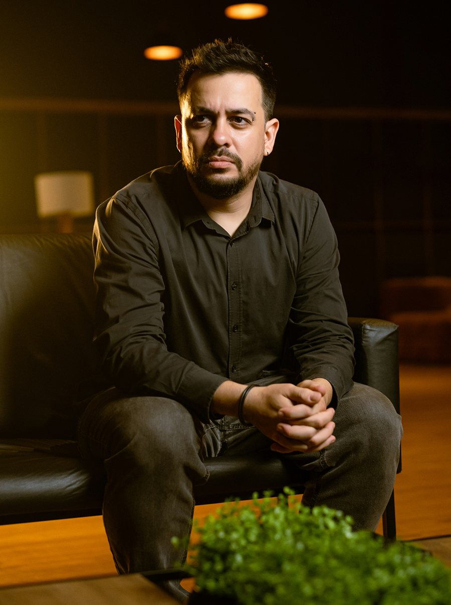

Filmes, edição e conteúdo. Um olhar para cada história.
Fale no WhatsApp ↗ Siga no Instagram ↗Gente, música, encontros e lugares. Um pouco do mundo pelo meu olhar.
Vamos conversar ↗ Explorar os vídeos ↗Inspire-se, copie e crie com um clique

Sou Rodrigo Fernandez, editor de vídeo, fotógrafo e criador de conteúdo em São José dos Campos, SP. São mais de 15 anos transformando material bruto em histórias, de filmes que pedem tempo pra serem contados a vídeos que precisam prender a atenção nos primeiros segundos.
Nesse caminho editei milhares de aulas de infoprodutos, VSLs, anúncios, documentários, reels e coberturas de festas pra diversos players do mercado digital. Este portfólio reúne um pouco disso, com a imagem e a narrativa sempre no centro.
Uma marca pra apresentar, uma história pra contar ou um momento pra registrar. O ponto de partida é sempre entender o que você quer comunicar e pra quem.